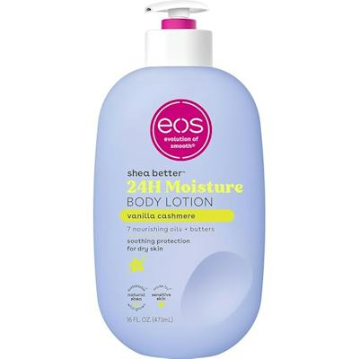
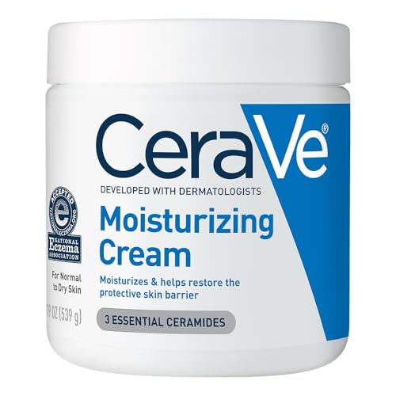
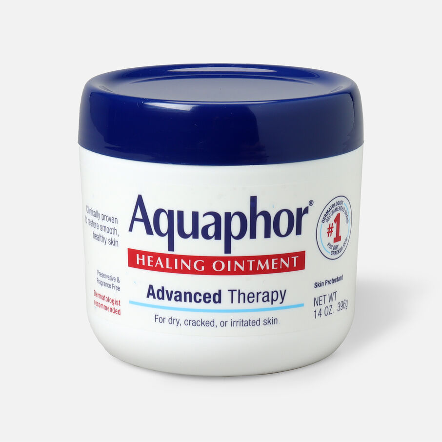
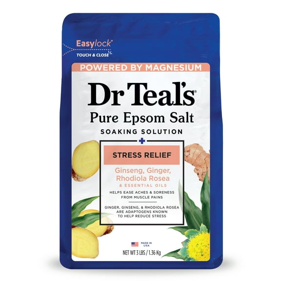
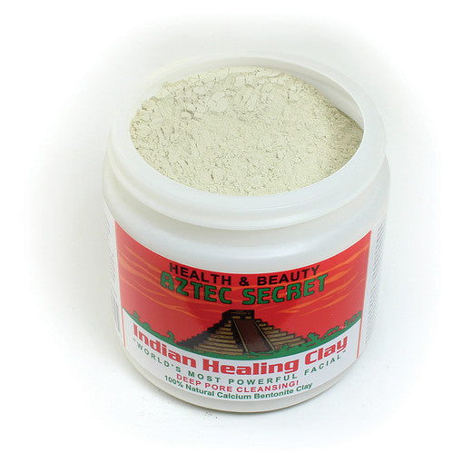
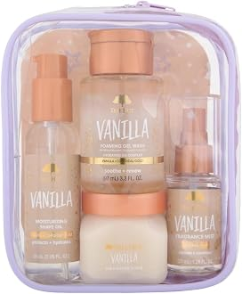
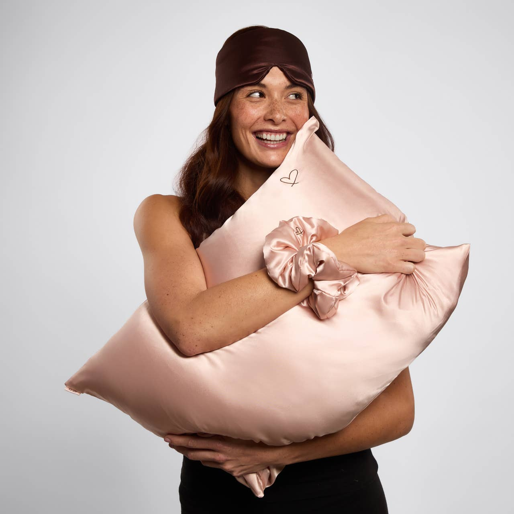
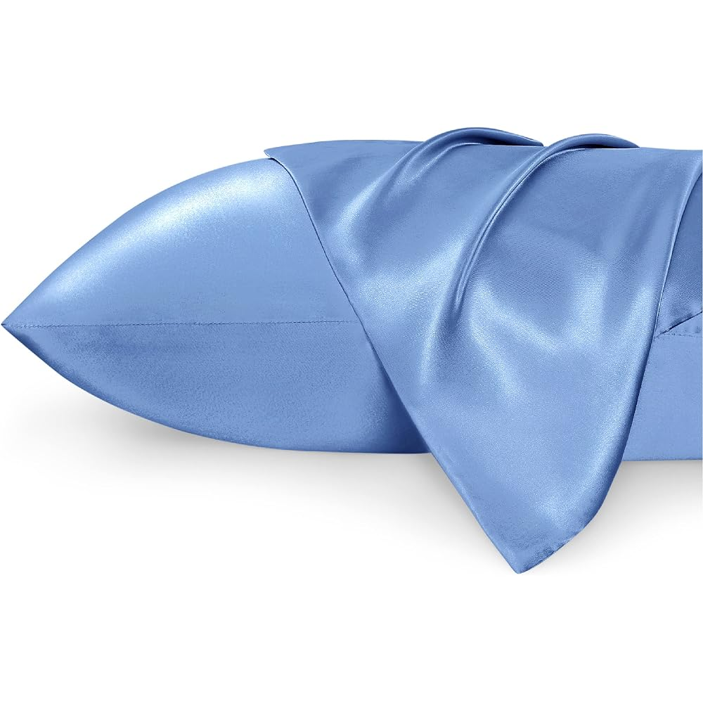
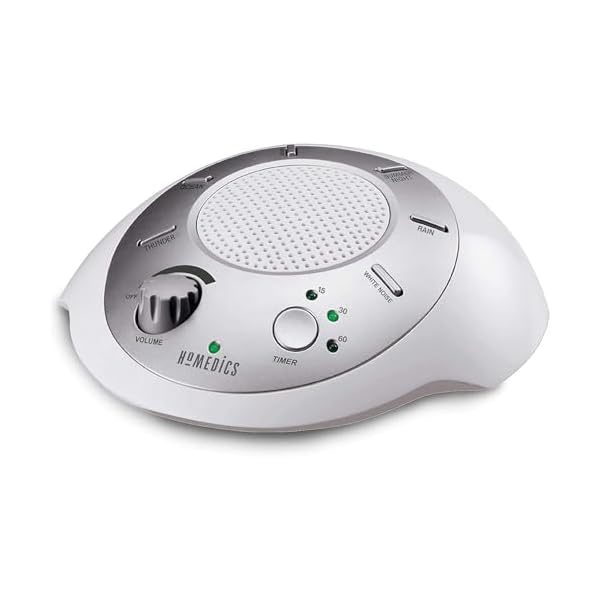
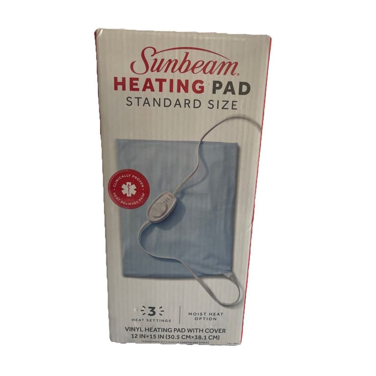

The 10 Best Self-Care Gifts Under $30 (2026 Gift Guide)
Self-care gifts fail in a predictable way: a scented candle from a brand nobody's heard of, lit once, forgotten. The gifts that land are the ones people already buy for themselves on repeat — the lotion with a cult following, the bath soak that actually ends a long day, the pillowcase that makes sleep feel like an upgrade.
That's the rule behind this list. Every pick below is under $30, from a brand people recognize, and proven at a scale no gift-guide filler can fake — category bestsellers with tens of thousands of ratings. The list spans four lanes, so you can match the gift to the person: bath, skin, sleep, and recovery.
How we picked these
- Under $30, really. No "was $60, now $29.99" games. If a pick can't stay under $30, it doesn't make the list.
- Recognizable brands or proven bestsellers. Category #1s and six-figure rating counts beat pretty packaging from no-name labels.
- Things people re-buy. A self-care gift should be empty by spring, not gathering dust by January.
- Safe lanes included. Fragrance-free picks (CeraVe, Aquaphor) for recipients whose tastes you don't know yet.
We did not accept payment for placement, and we re-check prices before the holiday season each year.

1. eos Shea Better Body Lotion, Vanilla Cashmere (16 fl oz) — the viral hero pick
The #1 bestseller in Body Lotions and a top seller across all of Beauty & Personal Care, with a 4.7-star rating across roughly 74,000 reviews and 100K+ bought in a single month. The vanilla cashmere scent is the one that went viral — warm without being sugary — and the big 16 oz pump bottle reads as a real gift at a drugstore price point.
- Pros: strongest social proof on this list by a wide margin; the scent is the gift angle; generous size for the price.
- Cons: scented, so it's not the pick for fragrance-sensitive recipients — that's what picks #2 and #3 are for.
Best for: the default self-care gift when you want the surest hit on the list.
Check current price
2. CeraVe Moisturizing Cream, 19 oz — the dermatologist-developed staple
The #1 bestseller in Face Moisturizers, rated 4.7 stars across more than 137,000 reviews. CeraVe's whole brand is "developed with dermatologists," and this is the fragrance-free face-and-body cream that anchors winter skincare routines everywhere. The 19 oz tub is the serious size — months of daily use.
- Pros: fragrance-free = the safest gift on the list; works for face and body; enormous proven rating base.
- Cons: purely practical — pair it with something indulgent (pick #1 or #6) if the gift needs a fun side.
Best for: anyone with dry winter skin, and any recipient you don't know well.
Check current price
3. Aquaphor Healing Ointment, 14 oz Jar — the do-everything winter fix
The #1 bestseller in Body Creams and a fixture of bathroom cabinets for decades. One jar covers dry skin, chapped lips, cracked heels, and minor scrapes — Aquaphor bills it as the #1 dermatologist-recommended product for dry, cracked skin. The 14 oz jar is the full-size, keep-it-for-the-season format.
- Pros: the most versatile pick on the list; fragrance-free and recipient-proof; a little goes a very long way.
- Cons: it's an ointment, not a pampering product — it wins on usefulness, not luxury.
Best for: the practical person, winter climates, and new parents.
Check current price
4. Dr Teal's Pure Epsom Salt, Stress Relief (3 lb) — the bath ritual anchor
Dr Teal's is the name in bath soaks, and this is the Stress Relief blend — pure Epsom salt with ginseng and ginger essential oils, a cleaner and more grown-up gift angle than the standard lavender. The 3 lb bag is multiple real baths, not a single-use novelty, and the line moves hundreds of bags a week on Amazon.
- Pros: the ritual pick — a soak is an experience, not an object; big bag, small price; pairs naturally with pick #9 for a full wind-down gift.
- Cons: needs a bathtub to shine; shower-only households should look at pick #6 instead.
Best for: stressed coworkers, new moms, and anyone who ends the day on their feet.
Check current price
5. Aztec Secret Indian Healing Clay, 1 lb (Version 2) — the cult mask
A top-10 bestseller in Facial Masks with a following most skincare brands would kill for. This is the current Version 2 of the famous bentonite clay — mix it with water or apple cider vinegar for a deep-pore mask. One jar makes roughly 10–15 masks, which is the best per-use math in skincare gifting.
- Pros: genuine cult status; a jar lasts for months of weekly masks; fun, hands-on ritual rather than another cream.
- Cons: it's a mix-it-yourself powder — some recipients will love the ritual, others want grab-and-go (pick #6).
Best for: skincare obsessives and anyone who loves a self-care Sunday.
Check current price
6. Tree Hut Mini Vanilla Everything Shower Gift Set — the boxed gift
The only true gift set on this list: scrub, shave oil, gel wash, and fragrance mist in travel sizes, all in Tree Hut's warm vanilla-coconut-sandalwood lane. Tree Hut's scrubs are a shower-aisle phenomenon, and the boxed mini set is the one pick here that arrives looking like a present instead of a product. Hundreds are bought every week.
- Pros: gift-ready format — four products, one box; lets the recipient find their favorite Tree Hut product; holiday-ready scent profile.
- Cons: travel sizes, so it's a sampler rather than a staple; newer listing with a smaller review base than the heavyweights above — the brand carries it.
Best for: when the gift needs to look like a gift — coworkers, teachers, gift exchanges.
Check current price
7. Kitsch Nighttime Renewal 3PC Sleep Set — beauty sleep, boxed
A satin pillowcase, a satin eye mask, and a pillow scrunchie in one giftable box, from the brand that has sold millions of satin pillowcases. Satin is the low-effort hair-and-skin upgrade — less friction, less frizz, no sleep creases — and the three-piece set format makes it feel curated rather than bought off a list.
- Pros: three coordinated pieces in gift packaging; the beauty-sleep angle is easy to explain on a gift tag; works for any hair type.
- Cons: one pillowcase — couples need pick #8's 2-pack instead (or as well).
Best for: beauty lovers and anyone whose nighttime routine is a ritual.
Check current price
8. Bedsure Satin Pillowcase 2-Pack (Standard, Sky Blue) — the budget sleep upgrade
The #1 bestseller in Bed Pillow Pillowcases and a top seller across Home & Kitchen overall. Two satin pillowcases with envelope closures for roughly the price of one boutique case — and the line comes in 30+ colors, so matching the recipient's bedroom is the personalization move. Same satin benefits as pick #7 at half the ceremony.
- Pros: #1 in its category; two cases (one to use, one in the wash); huge color range makes it feel personal.
- Cons: no gift box or extras — it's the practical version of the satin idea; standard size only in this pick.
Best for: the value pick of the sleep lane, and for gifting couples.
Check current price
9. HoMedics SoundSleep White Noise Sound Machine — sleep, no screens
The non-beauty lane of this guide, and a top seller in Sleep Sound Machines: six sound settings, an auto-off timer, and a travel-size body that runs on batteries or AC. HoMedics has sold this machine for well over a decade — in a category full of disposable gadgets, that staying power is the review that matters.
- Pros: self-care that isn't a cream or a candle; decade-plus track record; genuinely useful for light sleepers and travel.
- Cons: six sounds is plenty for most people, but sound-library maximalists will want a bigger machine at a bigger price.
Best for: light sleepers, new parents, and frequent travelers.
Check current price
10. Sunbeam Heating Pad, Standard Size (12x15) — the recovery pick
Sore-muscle recovery is the most-gifted self-care gadget lane there is, and this is the pad that has quietly owned it for two decades: a 12x15 Sunbeam with 3 heat settings on a big slide controller designed to be easy for arthritic hands, a 9-foot cord, and a soft cover you can spray for moist heat and toss in the wash. It sits at #5 in Heating Pads — no app, no gimmicks, just the one everyone rebuys.
- Pros: the category's long-running bestseller; dead-simple controls make it the grandparent-safe pick; comfortably the cheapest gadget on this list.
- Cons: standard 12x15 size, not king coverage — and the most appliance-like gift here; it wins on relief, not indulgence.
Best for: athletes, desk workers with wrecked shoulders, grandparents, and anyone always reaching for a heating pad.
Check current priceQuick comparison
| Pick | Best for | Why it wins |
|---|---|---|
| eos Vanilla Cashmere Lotion | The sure hit | #1 in Body Lotions, 100K+ bought in a month |
| CeraVe Moisturizing Cream | Dry winter skin | #1 in Face Moisturizers, 137K ratings, fragrance-free |
| Aquaphor Healing Ointment | The safe pick | #1 in Body Creams, fixes everything winter breaks |
| Dr Teal's Stress Relief Soak | Unwinding | The bath ritual anchor, 3 lb bag |
| Aztec Secret Healing Clay | Skincare fans | Cult mask, 10–15 masks per jar |
| Tree Hut Mini Vanilla Set | Looking gift-ready | The only boxed set — scrub, oil, wash, mist |
| Kitsch Sleep Set | Beauty sleep | Pillowcase + eye mask + scrunchie, boxed |
| Bedsure Satin 2-Pack | Value sleep upgrade | #1 in pillowcases, 30+ colors |
| HoMedics SoundSleep | Light sleepers | A decade on the market, travel-size |
| Sunbeam Heating Pad | Sore muscles | 12x15, 3 heat settings, washable cover |
Frequently asked questions
What is the best self-care gift under $30?
Start with the eos Shea Better Body Lotion in Vanilla Cashmere — it's the #1 bestseller in Body Lotions with 100K+ bought in a month, and the scent is the reason it went viral. If the gift needs to arrive looking like a present, choose the Tree Hut Mini Vanilla Everything Shower Gift Set, the only boxed set on this list.
What do you give someone who needs to relax?
Pair the two wind-down picks: Dr Teal's Stress Relief Epsom Salt for the soak and the HoMedics SoundSleep machine for the night after. Together they build an actual evening ritual — a soak to end the day and steady sound to end the night.
Are self-care gifts good for people you don't know well?
Yes, if you stay in the fragrance-free lane. CeraVe Moisturizing Cream and Aquaphor Healing Ointment are the safe picks: no scent to get wrong, universally useful, and both are #1 bestsellers in their categories, so they read as thoughtful rather than generic.
What's a good self-care gift for someone with dry winter skin?
The CeraVe + Aquaphor one-two: CeraVe as the daily face-and-body moisturizer, Aquaphor as the heavy-duty fix for cracked heels, chapped lips, and stubborn dry patches. Add the eos lotion if you want one scented indulgence alongside the practical pair.
What about a bigger gift to go with these?
Round it out with one hero gift from our other guides: the best gifts under $25 for men, the best gifts under $25 for women, or a few picks from the best stocking stuffers under $15.
The bottom line
The best self-care gift isn't the prettiest one — it's the one that's empty by spring. A lotion with 100,000 buyers a month, a soak that ends a hard day, a pillowcase that quietly upgrades every night. Pick the lane (bath, skin, sleep, recovery), take the proven name in it, and keep it under $30.
Shopping ahead for the holidays? Our Black Friday deals watchlist tracks the early deals worth grabbing before they sell out.
Prices on Amazon change frequently. We re-check this guide before each holiday season, but always confirm the current price on the product page before you buy. As an Amazon Associate, we earn from qualifying purchases made through the links above.